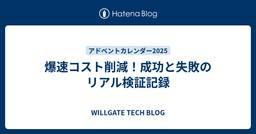
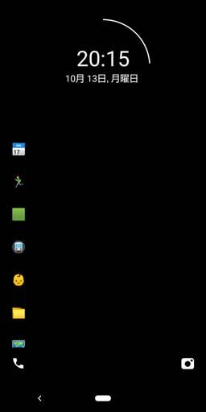
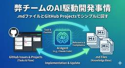

WILLGATE TECH BLOG
https://tech.willgate.co.jp/
WILLGATE TECH BLOG
フィード

爆速コスト削減！成功と失敗のリアル検証記録
WILLGATE TECH BLOG
この記事はウィルゲート Advent Calendar 2025 5日目の記事です。 adventar.org 弊社サービスのとあるプロダクトのインフラ環境は、サービス成長とともに複雑化・肥大化し、気づけば月額コストが想定以上に膨らんでいました。そこで「月額12万円削減」を目標に掲げ、インフラ最適化に着手。 バージョンアップ、スケールイン、リソース集約など、数々のトライを繰り返す中で、成功もあれば断念したものもありました。 本記事では、そのプロセスを振り返りながら、削減効果を共有します。 1. インフラ構成とコスト課題 2. まずは即効性！Auroraバージョンアップで有償サポート解約 3 A…
2日前
設計はビジネスを加速させる武器になる——美しい設計への固執を超えて得た気づき
WILLGATE TECH BLOG
この記事はウィルゲート Advent Calendar 2025 4日目の記事です。 adventar.org こんにちは、ウィルゲート開発室の武田です！ 私は設計が好きです。特にアプリケーションアーキテクチャの領域、クリーンアーキテクチャやオニオンアーキテクチャ、ヘキサゴナルアーキテクチャといった美しい理論に惹かれます。きれいに責務が分割されたコードや、美しく整ったレイヤー構造を見ると、それだけで気分が上がるタイプです。 しかし、ある時こんなことがありました。スピードが求められている場面で、美しい設計にこだわりすぎてリリースが遅れてしまったのです。その経験から、「理想の設計こそ正義」という価…
3日前
ミーティングを"いい感じ"にするために気をつけていること5選
WILLGATE TECH BLOG
この記事はウィルゲート Advent Calendar 2025 3日目の記事です。 adventar.org こんにちは、開発室の田島です。 みなさんはミーティングをしていますか？していますね？ では、そのミーティングは"いい感じ"ですか？ 今回は、日頃私がミーティングを"いい感じ"に進めるために気をつけていることをまとめてみました。読んでみれば当たり前のことも多いかもしれませんが、当たり前のことを当たり前にやることは大事なのでご了承ください。 ※"いい感じの"ミーティングとは ここでは「目的が達せられるミーティング」を"いい感じ"のミーティングと定義します。そもそもミーティングは特定の目的…
4日前

プラス状態のマインド、マイナス状態のマインドを認識して対処する 1
1
WILLGATE TECH BLOG
この記事はウィルゲート Advent Calendar 2025 2日目の記事です。 adventar.org こんにちは、ウィルゲート開発室の清水(@takaaki_w)です。 この記事の対象読者は、「2024年の年末の私」です。 一年前の自分に良い気づきを与えられると嬉しいですね。 みなさまは「プラス状態のマインド」「マイナス状態のマインド」と聞いた時にどんなことを思い浮かべられますでしょうか？ 例えば「自責思考と他責思考」や「Giver / Taker」などいろいろあると思います。 今後変わっていくかもしれませんが、今の私はプラス状態のマインドを「仕事もプライベートも活力があり明日が来る…
5日前

mdファイルとIssuesでシンプルに回す、AIツールに依存しない弊チームのAI駆動開発事情
WILLGATE TECH BLOG
この記事はウィルゲート Advent Calendar 2025 1日目の記事です。 adventar.org はじめに こんにちは！ウィルゲート開発グループの中尾（@NobleNomad41）です！ Claude Code + .mdファイル + GitHub Issues。 弊チームのAI駆動開発は、この3つで回っています。Claude SkillsもSubagentも使っていません。流行りのAIツールを色々導入して...みたいな話ではなく、かなりシンプルな構成です。 正直なところ、Skills等を導入していないのは「これから調査や仮導入を行うフェーズだから」というのが実情です。ただ、結果…
6日前

顧客課題の解像度を揃えることで実現した、成果につながるプロダクト改善
WILLGATE TECH BLOG
こんにちは、開発室の佐々木です。 企画段階では筋の通った案に見えても、いざリリースするとユーザーには使われず、事業インパクトにつながらない。 こういった悩みを抱える開発者の方も多いのではないでしょうか？ 私の担当するプロダクトでも同じような悩みを抱えていましたが、取り組み方を見直した結果、受注にも解約抑止にも効く改善を実現できました。 今回は、直近の半期で取り組んできたプロジェクトを振り返りながら、事業部と開発が“同じ顧客課題”を見ることの重要性についてまとめていきます。 企画メンバー内だけで議論が閉じていた課題感 現場の一次情報を取るために、事業部MTGへ積極参加 技術的な正しさだけでは見落…
20日前
10年ぶりの資格試験は合否に関わらず学びがあった
WILLGATE TECH BLOG
こんにちは、セールステック開発の田島です。 みなさん、資格試験にはチャレンジしていますか？ 私はしていません。どれくらいしていないかというと、就職以来一度もしていません。 一方、最近社内では資格試験の機運が高まっています。情報処理推進機構にも基本情報技術者、応用情報技術者、システムアーキテクト、プロジェクトマネージャ、などなど勉強になる資格試験がたくさんあります。 そんなに皆取り組んでいるなら私も何か受けてみようかしら、と思い先日「テクニカルライティング検定」というものを受験しました。 jtca.org 久々に資格試験に取り組んでみて感じたのは、「資格試験に挑戦すること自体にすごく価値がある」…
1ヶ月前
Claude CodeのPlanモードを駆使し、楽に品質を担保してみた
WILLGATE TECH BLOG
こんにちは、ウィルゲート開発室の武田です！ これは私がClaude Codeを使って仕様書駆動開発をしていたときのことです。 仕様書を書いて、設計書を書いて、レビューして修正して...気がつくと既に半日が過ぎていて、ふと手を止めました。 「私、いつまでドキュメント書いてんの？」 もちろん、仕様書駆動開発にはメリットがあります。要件の整理、設計の明確化。これによってClaude Codeが仕様を満たす確実なコードを出力することができます。 しかし、怠惰な私は「もう少し楽できるんじゃないの？」という思いが頭をよぎります。特に1人月程度の機能開発では、「ドキュメント作成→レビュー→修正→関連ドキュメ…
3ヶ月前
Gemini APIで生成結果が出ない理由とは？安全性設定の仕組みを解説
WILLGATE TECH BLOG
こんにちは！開発室の佐々木です。 Googleが提供するGemini APIには、生成結果のリスクをコントロールする「安全性設定」が用意されているのをご存知でしょうか？ 不適切な出力を事前に防いでくれる便利な仕組みですが、一方で判定が厳しすぎると、意図せずフィルタにかかってしまい、生成結果が空で返ってくることも... 本記事では、Gemini API における「安全性設定」について、その仕組みから実際の使い方までを分かりやすく解説していきます。 実際にブロックされる例 安全性設定とは？ 回避方法（安全性設定の調整） リクエスト例 実務でのベストプラクティス おわりに 実際にブロックされる例 ま…
3ヶ月前
新規開発の炎上を防ぐ！「最悪のケース」想定で変わったチーム開発
WILLGATE TECH BLOG
こんにちは！ウィルゲート開発室の水口です。 はじめに プロジェクト概要 前半のファクトチェック開発で見えた問題点 後半のコピペチェック開発で実践した対策 開発計画時にリスクを想定する 2. スケジュールへの組み込み 3. 要件の早期合意 4. リリース週の調整 5. 残課題の共有 改善の効果 稼働時間の変化で見る改善効果 プロセス面での効果 実務面での効果 今後に向けて まとめ はじめに 今回TACT SEOの開発チームではリスクチェック機能の開発に取り組みました。7月上旬にファクトチェック機能をリリースし、7月下旬にはコピペチェック機能のリリースしました。 この開発を通じて、前半と後半で大き…
3ヶ月前
MySQL延長サポートを活用するよりバージョンアップした方がいい
WILLGATE TECH BLOG
MySQL延長サポートの主なリスク AWSのMySQL延長サポート 料金形態 弊社の状況 バージョンアップ まとめ 今回はAWSにおけるMySQL延長サポートに頼るよりも、バージョンアップを行った方がいいと言うお話です。 結論から言うと MySQLバージョンアップはすぐにするべき！！！ です。 理由と対応した事に関しては以降に書いていきます。 MySQL延長サポートの主なリスク セキュリティリスク 新機能非対応 費用の割高感 この中で弊社の問題として取り上げたのが 費用の割高感 になります。 AWSのMySQL延長サポート AWSのMySQL延長サポートとは？ MySQLのバージョンがサポート…
4ヶ月前
AIエージェントで指示した作業の結果をレポートするシステムのインフラ構成を構築しました！
WILLGATE TECH BLOG
概要 今回はAIエージェントで作業を指示し、MCPで作業した結果を要約してレポートとして保持するシステムのインフラを構築しました！ システムを構築する上で色々と考慮しながら進めたので、実際にやった結果について共有します。 システムアーキテクチャの全体像 詳細ワークフロー 各サービスの役割 導入メリットと考慮事項 メリット・デメリットのまとめ 留意点 まとめ システムアーキテクチャの全体像 以下アーキテクチャにより、タスクの実行・実行結果の要約・レポート生成というワークフローをフルマネージドで運用コストを低く自動化できます。 詳細ワークフロー AIエージェントで使用する情報をjson形式でSQS…
4ヶ月前
アプリエンジニアからインフラへ〜最初のタスクの振り返り&わからないタスクへの向き合い方〜
WILLGATE TECH BLOG
はじめに ウィルゲート開発室のことみん（@kotomin_m）です！ 私は今年の3月頃からインフラユニットになりました。 これまではSREメインと兼任としてアプリケーション開発をやってきていました。入社当初からアプリ開発がメインだったので、インフラをやるのは初めてでした。 弊社ではインフラはプロダクトのインフラ基盤全般の運用・保守などを担当、SREはアプリケーションの改善活動を担当とチームが分かれています。 このブログは、インフラエンジニアになって最初にやったタスクを振り返るパートと、わからないタスクに対してどう取り組むと良いか私の経験を伝えるパートの2本立てでお話します。 （※ ブログでは便…
4ヶ月前
Laravelオンリーのプロダクトに、inertia.jsをつかって段階的にReactを導入・移行する方法を確立してみました！
WILLGATE TECH BLOG
はじめに これは、我々エンジニアグループがInertia.jsでBladeを殺さずReactを飼い慣らし、 次の7年を戦う足場を築いた記録である。 こんにちは！ウィルゲート開発グループの中尾（@NobleNomad41）です。 最近、弊社のWebプロダクトで「LaravelオンリーからReactへの段階的移行」を確立・実践してみました。正直なところ、最初は「本当にうまくいくんだろうか？」と半信半疑でしたが、実際にやってみると予想以上にうまくいきませんでした。やっぱりだめじゃないか。でも成功しました。 備忘録も兼ねて、LaravelオンリーからフロントエンドへReact導入の段階的移行手法を後世…
5ヶ月前
ベテランエンジニアの思考スピードの秘密「ワーキングメモリ・システム1&2・メタ認知」を知る
WILLGATE TECH BLOG
はじめに 「なぜあの先輩は、ターミナルに赤文字が出た瞬間に原因を当て、設計レビューでも数秒で論点を整理できるのか？」 単に経験値が高いだけと思いがちですが、裏には“脳の使い方”そのものを鍛え上げた結果があります。 ベテランエンジニアの思考スピードを支えるのは、次の3つのしくみです。 ワーキングメモリ – 情報を一時的に並べ替える「頭の作業台」の役割 システム1とシステム2 – 「瞬時の直感」と「じっくり熟考」を切り替える二つの思考モード メタ認知 – どのモードで考えるかを判断し、戦略を修正する司令塔の役割 どうも、ウィルゲートのVPoEのzoe（@for__3）です。 今回は、1on1やエン…
5ヶ月前
アップロード速度を4倍に改善した話 - 7年運営プロダクトのコア機能をDDD設計で安全に移行しました
WILLGATE TECH BLOG
はじめに こんにちは！ウィルゲート開発グループの中尾（@NobleNomad41）です！ 今回は、運営7年目を迎えた弊社プロダクトのファイルアップロード機能を改善した取り組みについて書いてみたいと思います。 結果からお伝えすると、3GBのファイルアップロードが5分から1分13秒になりました。約4倍の改善です！ ただし、今回の改修で一番面白かったのは、実はパフォーマンス改善の手法だけではありません。当プロダクトのコア機能をどうやって安全に移行したのかという点も併せてご紹介します。 長期運営による技術負債、既存コードへの影響範囲の不透明さ、そしてビジネスへの致命的な影響リスク。これらをDDD（Do…
5ヶ月前
PHPerKaigi 2025で初登壇しました！OpenSearchデータを可視化した話
WILLGATE TECH BLOG
はじめに こんにちは！インフラユニット所属の野中です。 3/22(土)に開催されたPHPerKaigi 2025で初登壇しました！ 今回は「OpenSearchのデータをGrafanaで可視化して、自由の翼を授ける」というテーマでお話しさせていただいた経験と、その内容について共有したいと思います。 はじめに 登壇内容：OpenSearchとGrafanaの実践的活用法 登壇資料と参考情報 初めての登壇で学んだこと カンファレンスならではの交流 資料と実際の発表の違い（発表の裏側） おわりに：初登壇から得た学びと今後に向けて 登壇内容：OpenSearchとGrafanaの実践的活用法 私たちは…
8ヶ月前
EMConf JP 2025 に5%ルールを利用して参加しました！
WILLGATE TECH BLOG
© 2025 EMConf JP 2025 実行委員会 こんにちは！ウィルゲート開発グループでEMをしている佐々木です。 この記事では、5%ルールを活用して2025年12月に開催された「Engineering Manager Conference Japan 2025（EMConf JP）」に参加した感想をお伝えします！ 2025.emconf.jp 5%ルールとは Engineering Manager Conference Japanとは 会場について 当日のタイムテーブル オススメのセッション エンジニアリングマネージャーのロードマップ エンジニアリングマネジメントの4次元と生成AI時代…
8ヶ月前
PHPerKaigi 2025に所属エンジニアが登壇します
WILLGATE TECH BLOG
こんにちは！ウィルゲートプロダクト事業部開発グループの清水(@takaaki_w)です！ 3/21(金)~23(日)に開催される「PHPerKaigi 2025」に弊社に所属するエンジニアが登壇いたします！ phperkaigi.jp （以下、公式サイトより引用） PHPerKaigi（ペチパーカイギ）は、PHPer、つまり、現在PHPを使用している方、過去にPHPを使用していた方、これからPHPを使いたいと思っている方、そしてPHPが大好きな方たちが、技術的なノウハウとPHP愛を共有するためのイベントです。 今年の開催はオフライン会場を軸としたオフライン・オンラインハイブリッド開催です。みな…
9ヶ月前
5年ぶりに挑戦！エンジニアのマシュマロチャレンジの結末は…？
WILLGATE TECH BLOG
マシュマロ・チャレンジとは マシュマロチャレンジのルール 用意するもの 当日のようす 結果発表 各チームのコメント 個人の感想 パスタはスタッフが美味しくいただきました こんにちは！コンテンツユニットのりさりさです（@will_risarisa）です。 ウィルゲートには「開発組織活性チーム」というエンジニアが自身や自組織に対して誇りを持ち、他人に勧めたくなるような取り組みを行うチームがあります。 その一環で「マシュマロ・チャレンジ」を以前も開催したことがあるのですが、新しいメンバーも増えたので5年ぶりにやってみました！ 前回のマシュマロチャレンジが気になる方はこちら tech.willgate…
9ヶ月前
Developers Summit 2025 と PHPカンファレンス名古屋2025 に所属エンジニアが登壇します
WILLGATE TECH BLOG
登壇情報『私が新卒からプロへと変わる3年間～「エンジニア基礎」研修資料で伝えたエンジニアになるまでの道のり～』 登壇情報『プロダクトコードの複雑さを計測せよ〜5分ではじめるPhpMetrics活用リファクタリング〜』 おわりに こんにちは！ウィルゲートプロダクト事業部 開発グループ SREのことみん( @kotomin_m )です！ 今月 2 月 13 ~ 14 日 に開催される「Developers Summit 2025」と、2 月 22 日に開催される「PHPカンファレンス名古屋2025」に登壇いたします！ このブログは、こちら2つの登壇内容のご紹介です。 event.shoeisha.…
10ヶ月前
応用情報技術者試験（AP）に合格しました！
WILLGATE TECH BLOG
こんにちは！コンテンツ開発ユニットの清水(@takaaki_w)です。 この度、昨年10月に受験した応用情報技術者試験（AP）に合格しました。 この記事では、受験の背景や試験に向けて行った勉強方法、受験してみての感想などをお伝えいたします。 応用情報技術者試験とは？ 試験概要 受験した背景 私の勉強方法 午前問題の対策 午後問題の対策 午後試験の戦略 受験の振り返り さいごに 応用情報技術者試験とは？ 応用情報技術者試験とは、IPA（情報処理推進機構）が定めた情報処理技術者試験のスキルレベル3に位置する国家資格です。 試験区分一覧 | 試験情報 | IPA 独立行政法人 情報処理推進機構 より…
10ヶ月前
カンファレンス初登壇！「PHP Conference Japan 2024」登壇レポート
WILLGATE TECH BLOG
こんにちは！ウィルゲート開発グループの佐々木です。 この記事では、2024年12月に開催された「PHP Conference Japan 2024」で初めてカンファレンス登壇を経験した経緯や感想をお伝えします！ phpcon.php.gr.jp 採択トークのご紹介 登壇に至った経緯 登壇してみて感じたこと 登壇を通して学んだこと おわりに 採択トークのご紹介 まずは、採択されたトークについてご紹介します。 今回、私は「毎日13時間もかかるバッチ処理をたった3日で60%短縮するためにやったこと」というタイトルで、LTをさせていただきました！ fortee.jp 以下が発表で使用したスライドになり…
10ヶ月前
生成AIの理解度を図るテスト・Generative AI Testを受験しました
WILLGATE TECH BLOG
こんにちは！ウィルゲート開発グループの水口です。 生成AIの理解度を図るミニテストであるGenerative AI Test（2024 #2）を受験し、合格しました。 今回はテストを受験した感想や、おすすめの勉強方法について共有いたします。 Generative AI Testの概要 試験形式 出題範囲 Generative AI Testの特徴 受験のきっかけ 試験の感想 今回（2024 #2）の出題内容について 受験してよかったこと おすすめの勉強方法 1. 全体的な概念理解 2. カンペの作成 3. プロンプト手法の理解 4. 例題を解く 5. 生成AIの利用に慣れる さいごに Gene…
1年前
社内で謎解きイベント「施錠されたWGオフィスからの脱出」を開催しました！！
WILLGATE TECH BLOG
こんにちは！！開発グループ 開発本部ユニットの田島です。 先日、開発グループ内で謎解きイベントを開催したので今日はそんなお話をさせてください。 最高の写真 開催の背景 開催までの道のり 開催の様子 おわりに 開催の背景 私は謎解きが大好きで常日頃より様々なイベントに足を運んでいるのですが、ある日突然「おれも公演（謎解きイベントのこと）を開催したい」と思い立ちました。つまり趣味です。私がやりたかったからやりました。悪いか。 思い立った瞬間のslack。こういうのはまず宣言してしまった方がいいですからね 開催までの道のり やりたかった、と言っても私は今まで謎解きイベントに参加するばかりで、謎一つま…
1年前
VPoEになってからの開発組織の1年を振り返る
WILLGATE TECH BLOG
この記事は「ウィルゲート Advent Calendar 2024」の 25日目最後の記事です。 adventar.org こんにちは、プロダクト事業部開発グループ VPoEのZOE ( @for__3 ) です。 実は2024年1月にウィルゲートの開発グループのVPoEに就任して約１年が経過しました。 今回はこのアドベントカレンダーの機会に私がVPoEになってからの開発組織の成長と、私自身が何を意識してどんなことをやってきたのか、それから今後の開発組織の展望についてまとめられたらと思います。 VPoE に就任した背景 もともとウィルゲートの開発組織は大きく分けて4つの組織から構成されていまし…
1年前
挑戦と成長の5年間：ウィルゲートで歩んだ私の道
WILLGATE TECH BLOG
この記事はウィルゲートアドベントカレンダー2024（24日目）の記事です。 adventar.org はじめに ウィルゲートでの5年間の歩み 1年目（2019年）: 未完成な組織への気づき 2–3年目（2020–2021年）: 組織文化の再構築 4年目（2022年）: 挑戦を支援する環境作り 5年目（2023年–2024年）: プロダクト事業部を発足 振り返り 今後の展望 おわりに はじめに 皆さん、こんにちは。ウィルゲート プロダクト事業部 執行役員 向平です。今年で私がウィルゲートに入社してちょうど5年の月日が流れました。実は、前回のアドベントカレンダーの最後で述べたように、私はSaaS事…
1年前
【感想戦】PHP Conference Japan 2024お疲れさまでした！！
WILLGATE TECH BLOG
ウィルゲートは12月22日に行われたPHP Conference Japan 2024にブロンズスポンサーとして協賛しました。このブログでは、当日配布物と登壇者の後日談、参加メンバーの感想をご紹介します！
1年前
【全国制覇】ウィルゲート開発室2024年カンファレンス登壇まとめ！！
WILLGATE TECH BLOG
この記事は「ウィルゲート Advent Calendar 2024」の 22 日目の記事です。 adventar.org こんにちは！開発グループの佐々木です。 ウィルゲートでは、今年もたくさんのカンファレンスで登壇しました！ 特に今年は、日本列島の北から南まで、さまざまな場所のカンファレンスに参加させていただきました。 そして今年はなんと、10カンファレンスで合計20登壇を達成しました！ まさに全国制覇したといっても過言ではないのではないでしょうか！ また、本日（12/22）開催のPHPConferenceJapan 2024にも、弊社から3名が登壇します！！ 今年最後のカンファレンスで、弊…
1年前
腐敗防止層と依存性の逆転を駆使して、ミニマムに変更に強くしてみる
WILLGATE TECH BLOG
この記事は「ウィルゲート Advent Calendar 2024」の 21日目の記事です。 adventar.org こんにちは、プロダクト事業部開発グループ ソリューション開発ユニットの武田です。 以下の記事に引き続き、「ウィルゲート Advent Calendar 2024」2つ目の記事です。 興味がある方はこちらの記事も覗いてみてください✌️ tech.willgate.co.jp 私はここ1年いくつかのプロダクトを渡り歩いています。 様々なプロダクトで開発していく中で、あまり設計が重視されていないプロダクトに出会うこともありました。 だからといって、その都度大規模なリファクタリングを…
1年前